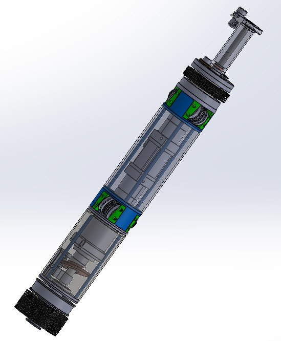
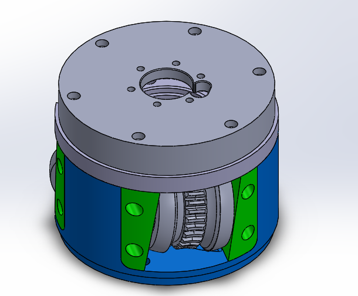
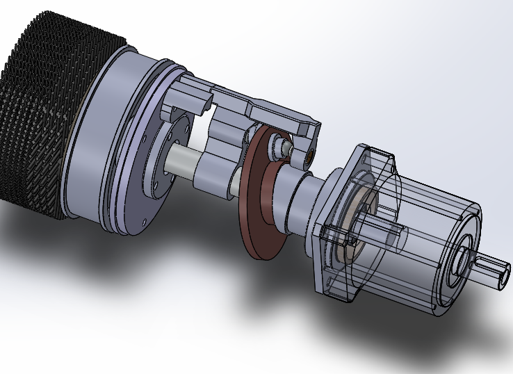

Barrel Cleaning Robot
125 mm Tank Barrel
A purpose-built barrel cleaning robot developed from an initial concept. Our team worked through the component selection, engineering calculations and mechanical assembly design to create an integrated cleaning system. The project has since progressed into component fabrication and physical assembly work.


Design contribution
Developed the robot from the ground up with the team, defining the mechanical layout and integrating the cleaning and motion-related components into the main assembly.
The work combined design decisions, component selection and engineering calculations rather than adapting a complete existing robot design.
System overview
- Two cleaning brushes, positioned at the front and handle-side ends of the assembly.
- Two metal-detection sensors used to identify the robot's position relative to the barrel.
- Automatic forward and reverse cleaning motion, with reversal when the front brush exits the barrel.
PROJECT 01 / COMPONENT BREAKDOWN
Barrel Cleaning Robot Subassemblies

Wheel-Based Motion Assembly
This subassembly provides movement through the barrel. Three silicone wheels are arranged around the assembly, with their rotating motion moving the robot forward.
The blue housing brings the wheel units together as a compact mechanical assembly within the main robot.

Cam-Driven Brush Mechanism
A cam mechanism produces the brush's repeated cleaning movement. As the mechanism rotates, the brush moves back and then advances with a quick forward stroke.
This repeated back-and-forth action is used to clean the barrel's internal surface.
01.3 / PHYSICAL BUILD
Fabrication & Production
Following the CAD design and subassembly work, our team began production of the Barrel Cleaning Robot. Component fabrication and physical assembly work brought the design into the workshop, as documented in these original photographs.
From design to physical components
The fabrication work produced individual components and progressed into partial mechanical assemblies. The photographs show parts at different stages of the build, including the cleaning brush and assembled mechanical units.
This stage connects the main CAD assembly and the motion and brush subassemblies above with the physical production work.
Production & assembly progress
The workshop images document components laid out for assembly and practical assembly work alongside the CAD reference.
Production has started, with fabrication and assembly progressing at component and subassembly level. These photographs record that work in progress.